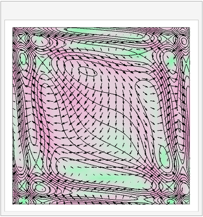
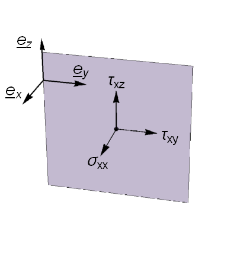
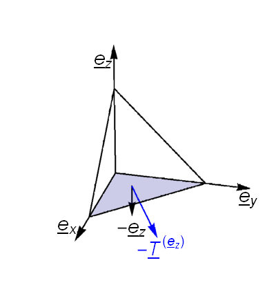

Navier-Stokes Equations¶
The material derivative¶
THIS SECTION NEEDS A REWRITE
According to the chain rule for an arbitrary function \(\phi(\underline{x},t)\),
If we put \(\frac{\mathrm{d}\underline{x}}{\mathrm{d}t}=\underline{v}\), which defines the path of a fluid element, then we obtain :
The differential operator \(\frac{D}{Dt}\) is called the “material derivative” or “convective derivative”.
The operator \(\underline{v}.\nabla\) gives the directional derivative tangent to \(\underline{v}\). It is often called convection, since it captures the motion/transfer arising due to the existence of the velocity field. For example, \(\underline{v}.\nabla\underline{v}\) is called convective acceleration. The term \(\frac{\partial \phi}{\partial t}\) accounts for…
An illustration of the idea is shown below.

{kind=link}
Suppose that a fluid particle follows the path marked in blue through the potential field \(\phi\), which is indicated by the background colour scheme and equipotential contours shown. The vectors (arrows) shown on the plot depict the instantaneous gradient field of \(\phi\). At each point on the trajectory, the experienced change in \(\phi\) is given by the projection of the particle’s own direction vector \(\underline{v}\) with the gradient field, \(\nabla \phi\), plus the instantaneous change in the potential field \(\phi\) at that point due to time evolution.
The material derivative can also be applied to each element of a vector field \(\underline{\phi}\), to give the change in \(\underline{\phi}\) following the motion of a fluid particle.
An interesting example description of these ideas can be found at https://www.youtube.com/watch?v=l4F2bZgwcpU
Mass transport¶
Consider the mass flow through an arbitrary volume of fluid at a fixed location, like the “bag” shown in the image on the left. We assume matter is neither created or destroyed.
{kind=link}
The following statement says that the change in mass of the fluid parcel is equal to the net mass flow into the enclosing surface \(\delta A\) per unit time.
The negative sign appearing in the formula occurs because the normal direction is outward from the surface, as illustrated in the image.
The time derivative on the left hand side of equation () can be brought inside the integral because for a fixed fluid volume the spatial and temporal variables are independent. On the right hand side the divergence theorem can be used to write the surface integral as a volume integral. Bringing all terms over to the left then gives
and since the volume \(\delta V\) is arbitrary this requires that the integrand itself is zero. By using the product rule to expand the intergrand, we can finally obtain
Important case: Mass transport for incompressible flow
If the density of each fluid particle does not change as it moves around, then the flow is said to be incompressible. In that case, \(\frac{D\rho}{D t}=0\), which leads to the following condition for incompressible flow :
In practice, fluid phenomena that are well below the speed of sound can be treated as incompressible
Cauchy stress theorem¶
“Stress” is a measure of the internal forces, such as pressure or friction acting between neighbouring fluid elements. We cannot discuss stress without first defining a particular surface that the stress acts on, since friction and pressure depend on the surface orientation.
However, the stress for a given surface can be expressed as a vector of components parallel to each coordinate direction, and according to Cauchy’s stress theorem, the stress vector on any plane through a point can be found by knowing the stress vector on each of three mutually perpendicular planes. We will consider planes perpendicular to the coordinate axes.
The Cauchy stress tensor (deviatoric stress tensor)
defines the normal and shear stress components $\(\sigma_{i,j}\)$ acting on a plane perpendicular to each axis, as illustrated below:

{kind=link}
We now consider the stress vector \(\underline{T}^{(\underline{n})}\) acting on an arbitrary surface \(\delta{A}\) perpendicular to unit vector \(\hat{\underline{n}}\) as illustrated in the figure below.

{kind=link}
We may apply Newton’s second law to the tetrahedron shown, allowing the mass of the tetrahedron to approach zero (so that the sum of the forces also approaches zero):
where \(\delta A_j\) is the projection of \(\delta A\) onto the illustrated face, given by \(\delta A_j=\hat{\underline{n}}.\underline{e}_j\delta A=\hat{\underline{n}}_j\delta A.\)
This gives
Conservation of momentum¶
By Newton’s second law, the change in momentum is given by the sum of all forces acting on the volume:
in which
\(\rho\underline{F}\) is the “body force” per unit volume, such as gravitational, magnetic or Coriolis forces, \(\underline{\sigma}(t,\underline{x}).\hat{\underline{n}}\) is the deviatoric stress tensor.
This time, we have to choose a “material volume”, meaning one that moves with the fluid, so that we track the same particles. In that case \(\rho\mathrm{d}V\) is constant so we may rewrite the left-hand side as
We use the divergence theorem again on the last term, and combine the three integrals for our arbitrary material volume \(\delta V\) to obtain
The Cauchy stress tensor \(\underline{\sigma}\) can be split up to separate normal stress components (pressure) and shear stress components. This gives the result